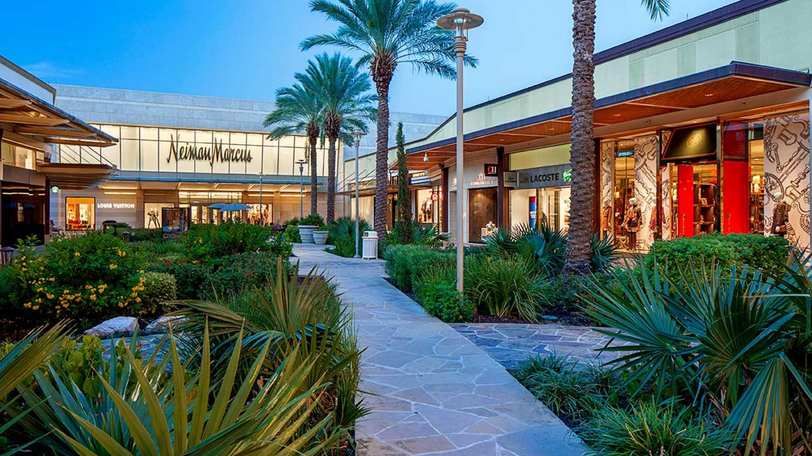

Alternatives
As a pioneer in alternative investing, Phantoms Trade has a long track record of managing the complexities of these types of strategies. By investing long and short, and balancing exposure to factors and asset classes, our alternative strategies are built to seek returns in both up and down markets. We offer both absolute return strategies, which target zero exposure to traditional markets, either at all times, or on average; and total return strategies, which maintain some exposure to traditional markets.
TYPES OF ALTERNATIVE FUNDS
Real Assets
These funds typically invest in tangible assets that derive their value from their substance and physical properties. Real assets include real estate, public and private infrastructure, natural resources, precious metals, and commodities.
Investors looking to add a broad real assets allocation to their private markets portfolio and gain access to key market sectors, including energy, power, infrastructure, and natural resources turn to Phantoms Trade. Real assets also serve as a crucial portfolio diversifier as they tend to respond to different economic conditions than other private asset classes. The performance of real assets, for example, has been positively correlated with inflation which has made them an effective hedge during periods when prices have risen.

CANNABIS
Phantoms Trade has pioneered the development of the institutional market in cannabis by leveraging our insights to help clients navigate a rapidly growing and changing global industry.
LEADING THE WAY FORWARD
Since 2016, Phantoms Trade has distinguished our expertise as a leader in cross-sector collaboration spanning consumer, health care, technology, industrials and regulatory policy verticals to offer the most comprehensive analysis of the global cannabis industry available on Wall Street.- Our Ahead Of The Curve Cannabis coverage provides analysis of the US and global market opportunities, Canada's legalization of adult use sales, the CBD market, expansion of international markets, and proliferation of consumer brands and novel form factors.
- Our technical analysts, traders, options specialists and beyond share insights that highlight market flows, indicators, credit updates and other noteworthy developments impacting the performance of Cannabis industry securities through our Harvesting Gains trading desk commentary.
Infrastructure
We are one of the world's largest infrastructure investors, owning and operating assets across the utilities, transport, energy and data infrastructure sectors. Our portfolio, grounded in 7 years of investment experience, provides diversified exposure to scarce, high-quality businesses with significant barriers to entry. We invest in infrastructure assets that deliver essential goods and services - from the movement of passengers and freight over toll roads and rail networks to the distribution of energy and other products through ports and pipelines, and much more.

Commodities
Who we are
Phantoms Trade's commodities team seeks to generate alpha through directional and relative value strategies across both physical and financial commodities markets. We evaluate opportunities in natural gas, power, crude, and refined products, and agriculture, primarily in North America and Europe.
How we do it
Phantoms Trade uses fundamental research, proprietary analytical methodologies, and quantitative analysis to drive our views. We join these techniques with an intense focus on understanding each market we trade, reflected in our ability to generate supply and demand balances for each commodity or product. A key part of this process is our advanced technology platform that allows us to quickly and deeply understand patterns within a market or product, conduct scenario analysis and improve the overall accuracy of our views.
Credit
Who we are
Phantoms Trade's credit team seeks to generate alpha by focusing on the relationships that connect corporate bonds, convertible bonds, bank debt, credit derivatives, credit indices, and equities.
How we do it
Operating primarily across the U.S. and European corporate universe, the group's core strategies integrate structural, statistical, and fundamental approaches to investing across the corporate capital structure.

Hedge Strategies
Also referred to as alternative strategies, these investment strategies use both long and short positions in markets and securities as well as derivatives in an attempt to minimize market beta returns while seeking alpha and risk-adjusted returns. Some of the most common strategies are long and short equity, global macro, relative value, and credit.
Private Equity
Private equity funds typically invest in equity capital that is not quoted on a public exchange. Instead, the funds take direct ownership positions in private companies, which potentially may provide above-market returns and control of the investment, at the risk of reduced liquidity and diversification.
INSTITUTIONAL MANAGEMENT
When you select Phantoms Trade to manage institutional assets, you will discover why we've earned the reputation for solid performance and equally solid relationships. Our stable ownership and strong balance sheet allow us to think long-term, while our dynamic culture inspires long tenures and deep institutional knowledge. And, above all, our high rate of client retention demonstrates that we not only say what we do, we do what we say.
Foreign Exchange
Phantoms Trade finance offers a broad array of professional services and access to the global foreign exchange markets for commercial and institutional clients. execution and clearing services in virtually all tradable currency pairs and derivative instruments.
Currency pair trading, also known as FX or forex (foreign exchange), enables traders to take advantage of increases and decreases in a currency's value. The foreign exchange market is the most liquid in the world, with a daily trading volume of over $5 trillion. We are specialists in leveraged trading, giving you the potential to generate financial returns on both rising and falling prices across FX, market. Whether you're an experienced trader or completely new to it, we're here to help you find freedom in the financial markets.
What is foreign exchange?
Forex, or foreign exchange, can be explained as a network of buyers and sellers, who transfer currency between each other at an agreed price. It is the means by which individuals, companies and central banks convert one currency into another - if you have ever travelled abroad, then it is likely you have made a forex transaction.
Crypto asset
Phantoms Trade offers a variety of cryptocurrencies that can be traded in relation to many different currencies. We offer pairings with the following cryptocurrencies: Bitcoin, Litecoin, Ripple, TRON, Ethereum and many others. Study cryptocurrency price charts with Phantoms Trade
Investing vs. trading cryptocurrency There are two options when trading in the cryptocurrency market. You can buy actual cryptocurrency on exchanges, where you own the underlying asset. This is considered a long-term investment, as you are waiting for the price to rise significantly before selling.
ENERGY & SUSTAINABILITY
With the global shift toward more sustainable sources of energy, Phantoms Trade continues to expand coverage to track this critical evolution, providing cutting-edge insights and superior capital markets and advisory expertise.
INVESTED IN SUSTAINABLE GROWTH
Sustainability and Energy Transition are areas of intense focus for the investment community, impacting virtually every sector. At Phantoms Trade, we draw from our in-depth research and thought leadership across the firm as we explore Sustainability and its impact on the business and social landscape. We bring particular expertise in alternative energy, mobility technology, biotechnology, synthetic biology, Internet of Things, edge computing and 5G, and robotics and automation.Energy Transition, in particular, draws on our leadership in next-generation energy coverage and also complements our long-standing expertise in traditional energy.
PRIVATE WEALTH MANAGEMENT
Our comprehensive approach to private wealth management will help you and your family enjoy your wealth today, and for generations to come.
FINANCIAL THOUGHT LEADERS, ON YOUR TEAM
When major market movements happen, our Wealth Management Investment Team is called upon by national news and media outlets to provide their expertise. Our Private Client Group advisors work with them, including our Chief Investment Strategist, Brent Schutte, to bring their insights and philosophy into your portfolio.Every great financial plan should begin with the plans you have for your life. So we start by understanding your vision, values, and evolving goals before recommending anything. We then design a comprehensive plan that combines advanced investment and risk management strategies, allowing you to invest even more confidently.
OUR APPROACH TO ALTERNATIVE FUNDS
We offer investors broad alternative investment capabilities spanning hedge strategies and real assets through a multi-boutique structure. We are focused on seeking new, uncorrelated active return sources by following disciplined, risk-controlled investment processes.
INNOVATIVE THINKING FROM SPECIALIZED EXPERTISE A RIGOROUS APPROACH TO ALTERNATIVES INVESTING SOUND RISK MANAGEMENT
Each portfolio team within our alternatives group is comprised of specialists who are leaders in their disciplines, backed by the strength of Franklin Templeton's global operating platform. We believe that our research-driven global perspective and a focus on active risk management can further enhance the potential portfolio benefits of alternative investments. Our teams' practices are complemented by the firm's centralized risk management framework, providing improved risk transparency. This helps us pursue the desired return profiles in the most efficient manner.

Absolute Return
Absolute Return Strategy
Provides exposure to highly diversified portfolios, aggregating nearly all of Phantoms Trade's
strategies in a multi-strategy format.
Arbitrage Strategies
We offer convertible, merger and event-driven arbitrage strategies, or a diversified portfolio
combining these strategies.
Credit Strategies
Seeks positive absolute returns by investing both long and short in a diversified portfolio of
credit instruments.
Equity Market Neutral
Employs a multi-factor, market-neutral investment process based on Phantoms Trade's broadest global
stock selection capabilities.

Style Premia
Seeks to harvest the return premia from well-known factors such as value, momentum, carry and
defensive across asset classes and geographies.
Global Macro
Invests in major asset classes based on prices and macroeconomic fundamentals, using a variety
of quantitative and qualitative inputs.
Alternative Risk Premia
Seeks to efficiently capture a diversified set of classic hedge fund styles and deliver them to
investors in a transparent and liquid vehicle.
Managed Futures
A diversified strategy that seeks to take advantage of price trends in global asset classes.

Opportunistic
Identifies securities that show extreme undervaluation based on both our quantitative models, as
well as a thorough qualitative review.
Real Return
Seeks to provide an inflation-hedging, positive real return through a diverse mix of strategies
and assets.
Total Return
Diversified Growth Strategies
Offers a wide range of return sources including market risk premia, alternative risk premia, and
alpha, with less of the reliance on rising prices for traditional assets that traditional
diversified growth strategies can have.
Long-Short Equity
Employs our multi-factor investment process based on Phantoms Trade's broadest global stock selection
capabilities, while maintaining a consistent net long exposure to the market.
Risk Parity
Invests across global asset classes by risk allocation as opposed to capital, seeking to build a
portfolio that is both broadly diversified, but not overly reliant on any single asset class.
Multi-Strategy
Offers a diversified approach to alternatives investing, seeking to provide broad exposure to
several different Phantoms Trade strategies at the same time.